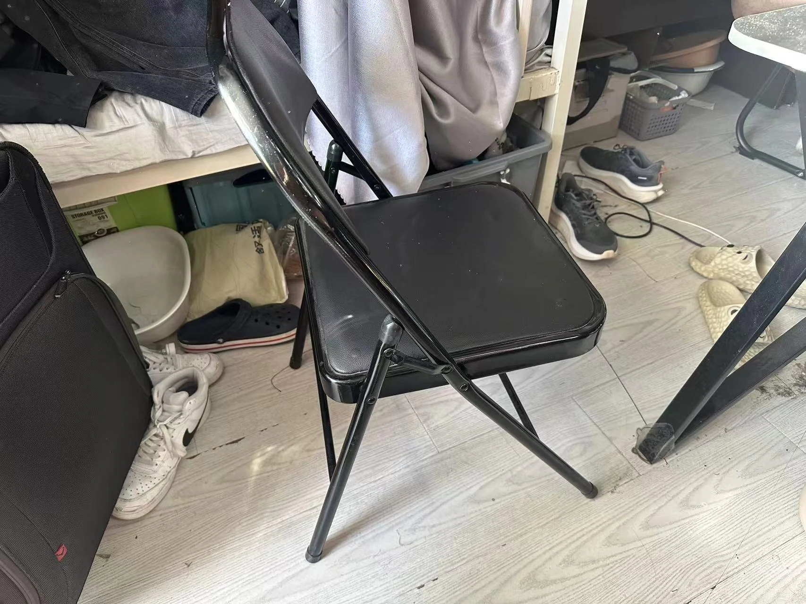
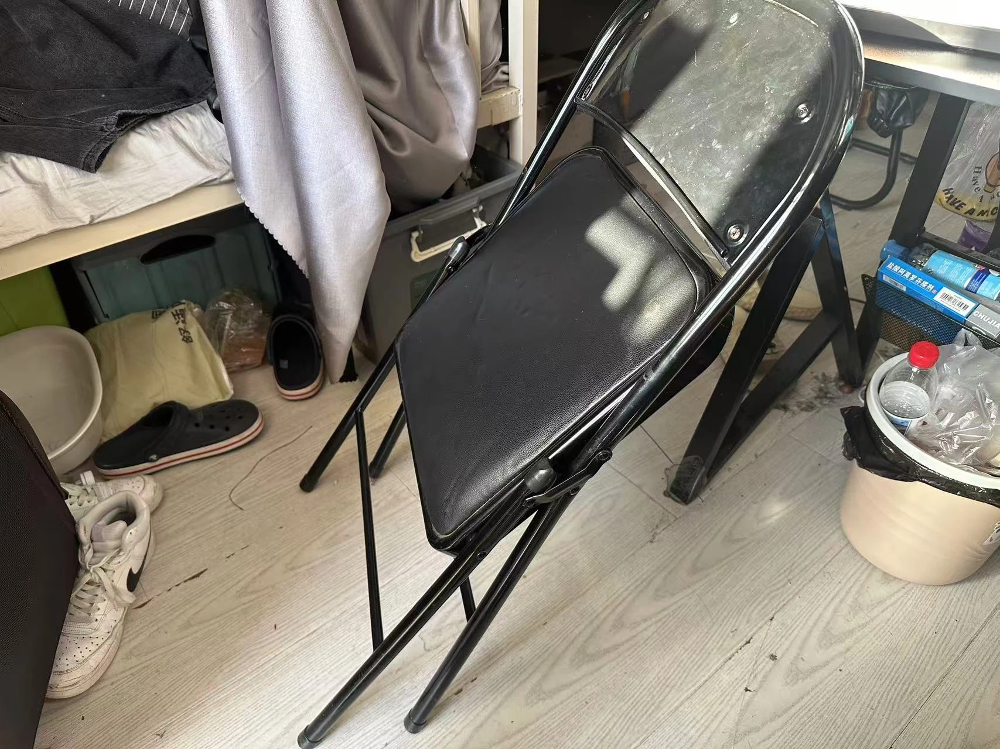
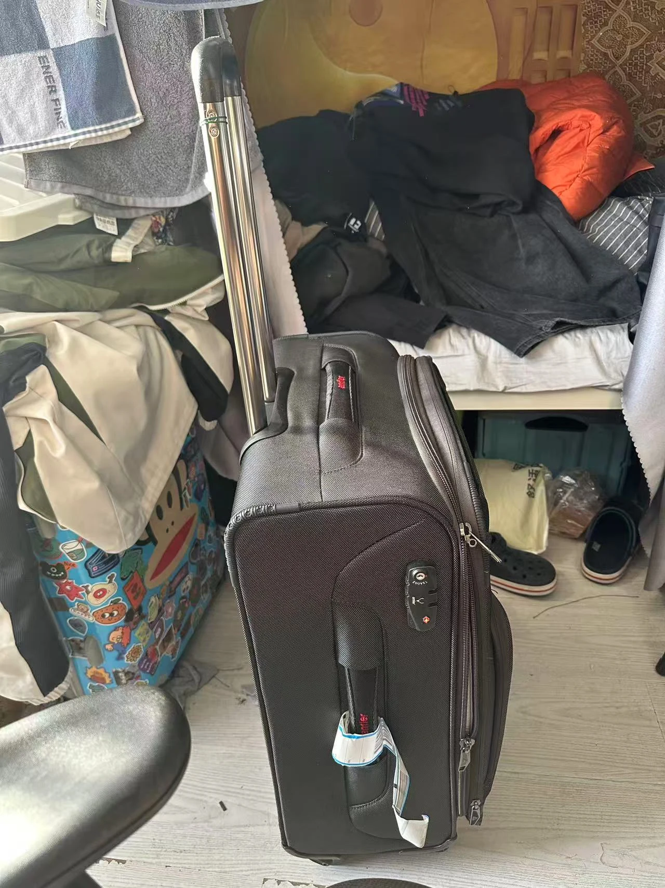
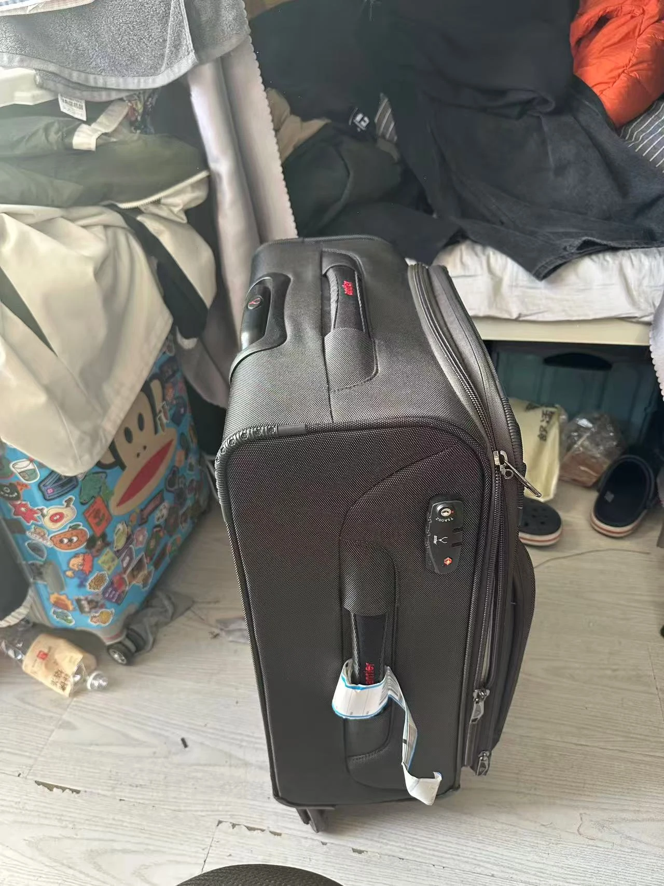

大连交通大学 · 智能建造23
我的原作生活中的结构力学现象与设计理念解析
董子臣
案例一：折叠椅的结构设计与力学原理应用
（1）表达力学问题
意义：折叠椅需兼顾便携性与承载能力，核心力学问题是如何通过合理结构设计，在折叠状态下体积最小化，展开后能有效传递和分散人体荷载，避免构件发生屈曲、剪切或弯曲破坏。
影响因素：构件截面形式、连接节点刚度、材料强度、荷载作用位置（人体重心分布）。
趋势：轻量化设计与承载稳定性的平衡，多采用可折叠的桁架式或框架式结构，优化材料分布以减少自重。
力学图示：
展开状态：折叠椅的椅面与支架构成三角形稳定结构，人体荷载（集中力P）作用于椅面，通过支架传递至地面，支架承受轴向压力与少量弯矩，节点承受剪力。
关键受力：支架杆体为压弯构件，椅面横梁为受弯构件，连接处为铰接节点（允许微小转动，传递剪力与轴力）。
（2）生活中体现

受力/变形标注：椅面中心标注“P（人体荷载）”，支架杆体标注“压应力”，连接处标注“铰接节点”，椅面横梁标注“弯曲变形（微小）”。
配文说明：展开后的折叠椅通过交叉支架形成三角形稳定结构，利用三角形的几何不变性抵抗侧向位移。人体重量通过椅面分散到四根支架上，支架采用空心圆管截面（相比实心杆，在相同材料用量下提高了面积二阶矩，增强抗屈曲能力）。连接处的铰接设计允许折叠时的相对转动，展开后则通过接触面摩擦力限制过度位移，保证承载时的稳定性。- 受力/变形标注：折叠处标注“转动轴”，支架重叠部分标注“无荷载传递”。
配文说明：折叠时，支架绕铰接节点转动，结构从几何不变的承载状态转变为几何可变的收纳状态，此时构件仅承受自重，无额外荷载传递，实现体积最小化，便于携带。
（3）对照《结构设计原理》内容
构件设计：支架采用空心圆管截面，符合“截面材料分布距中性轴越远，面积二阶矩越大，构件刚度越大”的原理，有效提高抗屈曲能力，避免压杆在人体荷载下失稳（对应《结构设计原理》中压杆稳定设计章节）。 结构体系：交叉支架构成的桁架式结构，利用桁架构件“仅受轴力、无弯矩”的受力特点，减少构件内力，实现材料高效利用（对应桁架结构设计原
节点设计：铰接节点传递剪力与轴力，避免节点处产生过大弯矩，降低节点破坏风险，符合“节点设计应适应构件受力特点，减少应力集中”的原则（对应结构节点设计章节）。
案例二：行李箱拉杆的力学设计与原理

（1）表达力学问题
意义：行李箱拉杆需实现伸缩功能，同时承受拉伸、压缩与弯曲荷载（如提拉时的轴向拉力、放置时的侧向压力、使用中的偶然弯曲力），核心是在保证伸缩灵活性的前提下，具备足够的强度与刚度。
影响因素：拉杆管材的截面尺寸、材料弹性模量、伸缩节之间的配合间隙、手柄处的荷载分布。
趋势：采用高强度轻质材料（如铝合金、碳纤维），优化截面形状（圆形、矩形），减少伸缩节间隙以提高稳定性。
力学图示：
提拉状态：拉杆承受轴向拉力F（行李箱自重+人体提拉反力），同时因手柄受力偏心产生附加弯矩M；伸缩节连接处承受剪力与局部压力。
关键受力：拉杆主体为拉弯构件，伸缩节为承压构件，连接处为滑动接触（传递压力与剪力，允许轴向伸缩）。
（2）生活中体现

受力/变形标注：拉杆顶端标注“F（提拉拉力）”，拉杆中部标注“拉应力+弯曲应力”，伸缩节连接处标注“剪力+局部压应力”。
配文说明：拉杆拉出后，承受行李箱自重产生的轴向拉力，同时因手柄握持位置与拉杆轴线存在微小偏心，产生附加弯矩。拉杆采用圆形空心截面，相比实心杆，在相同重量下具有更大的抗扭刚度与抗弯刚度，能有效抵抗弯曲变形；伸缩节通过嵌套配合，既保证轴向伸缩，又通过接触面对齐限制径向位移，提高整体稳定性。
受力/变形标注：缩回状态标注“无荷载（仅自重）”，对照组中空心杆标注“面积二阶矩I₁”，实心杆标注“面积二阶矩I₂（I₁>I₂）”。
配文说明：缩回状态下，拉杆收纳于行李箱内部，仅承受自重，伸缩节重叠部分提高了局部刚度。对照组可见，相同材料用量下，空心拉杆的截面面积二阶矩大于实心拉杆，根据弯曲刚度公式EI，空心拉杆的抗弯刚度更大，更适合承受提拉时的弯曲荷载，体现了“材料远离中性轴分布可提高构件刚度”的力学原理。
（3）对照《结构设计原理》内容
构件截面优化：圆形空心截面的设计，符合“受弯构件应尽量将材料布置在远离中性轴的位置”的原则，提高抗弯刚度与抗扭刚度（对应《结构设计原理》中受弯构件截面设计章节）。
材料选择：采用铝合金材料，兼顾强度与轻量化，符合“结构设计应在满足力学性能的前提下，优化材料选择以降低自重”的原则（对应材料选用章节）。
连接构造：伸缩节的嵌套配合，通过控制配合间隙减少侧向位移，避免连接处产生过大应力集中，符合“伸缩构件连接应兼顾灵活性与稳定性”的设计要求（对应构件连接构造章节）。

这是一份便于网页阅读的原作视图，保留提交内容的文字、图片和基本顺序；公开页面不显示学号。